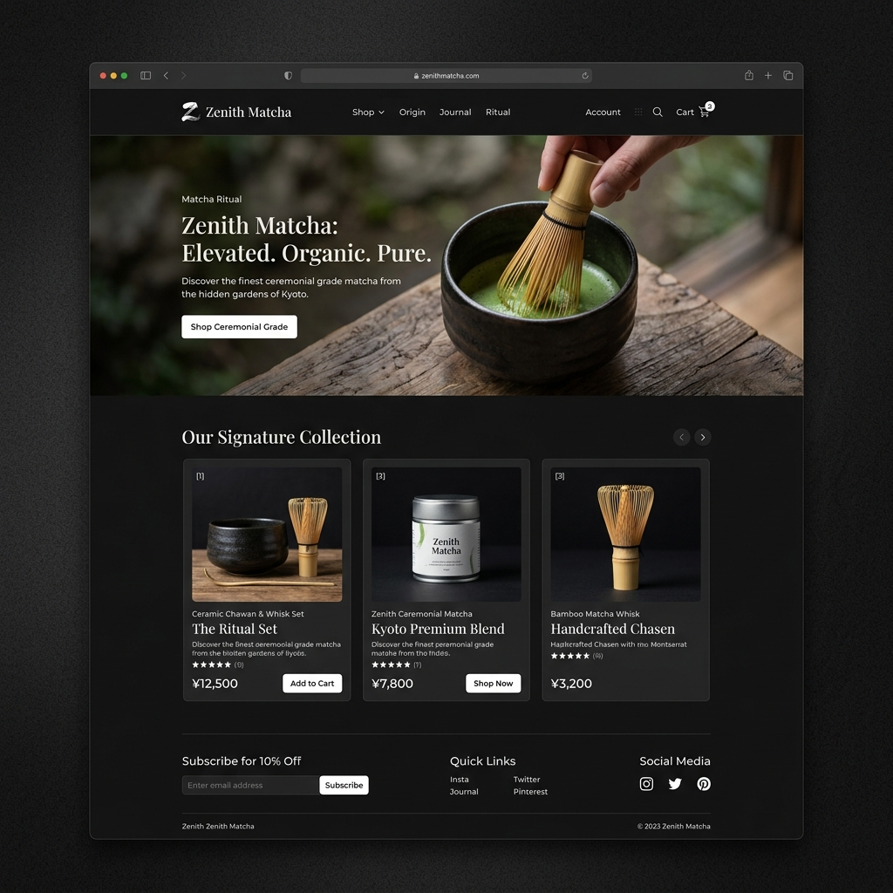
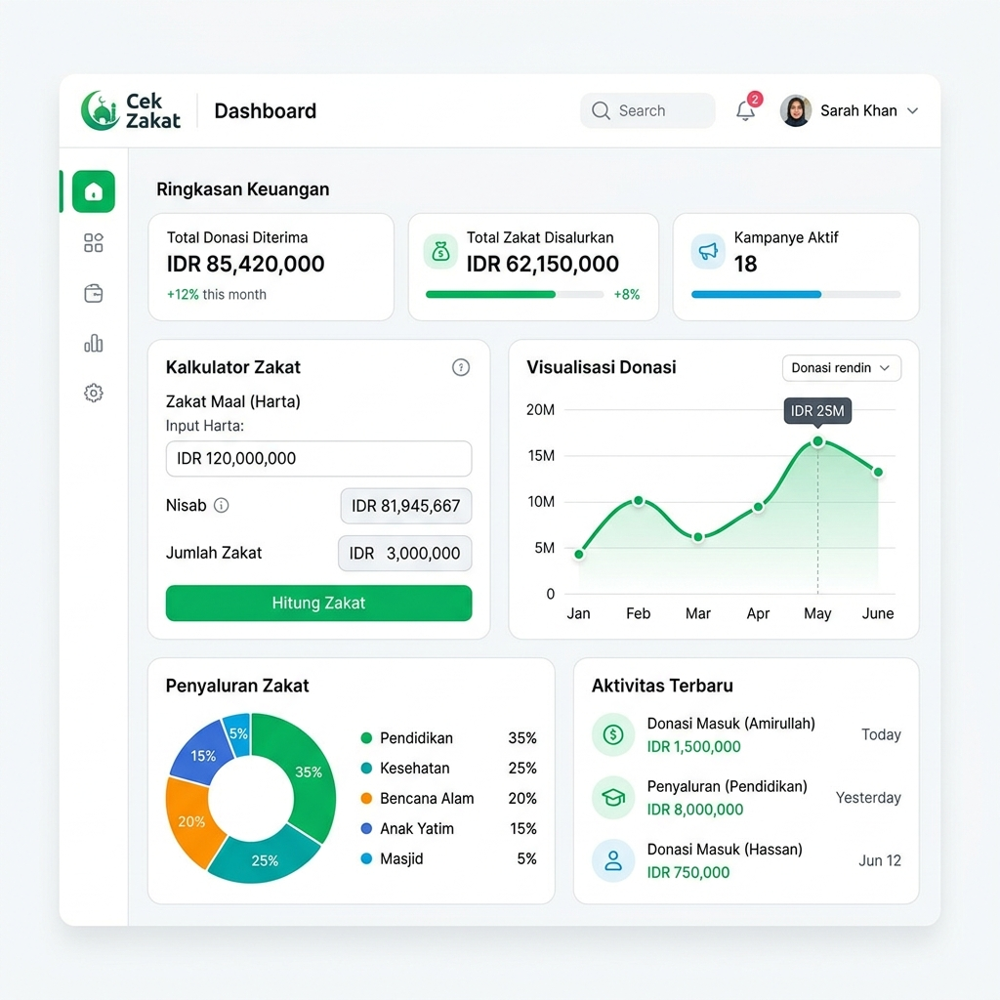
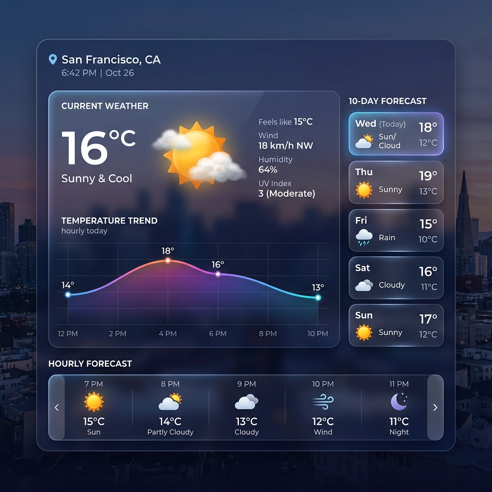
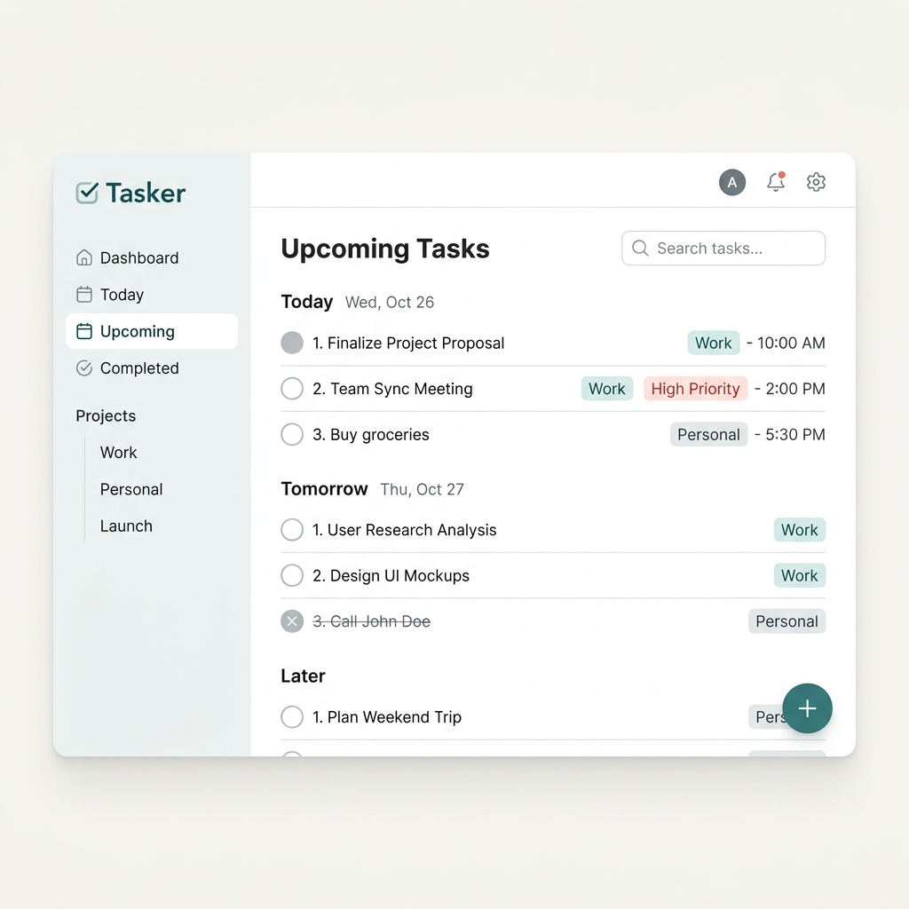

Merangkai pengalaman
digital dengan
presisi.
Saya membangun aplikasi web interaktif yang berfokus pada performa, arsitektur bersih, dan interaksi mikro yang halus.
01 // TENTANG SAYA
Berbasis di Tangerang, Banten. Saya mendekati pengembangan frontend bukan sekadar tugas pengkodean, melainkan disiplin rekayasa. Saya percaya pada penulisan kode yang sama elegannya di belakang layar dengan antarmuka yang dihasilkannya.
Unduh Resume ATS02 // KEAHLIAN
* Persentase mewakili tingkat kemahiran junior yang saya nilai sendiri relatif terhadap standar industri senior.
03 // PERJALANAN
SMA Al Fusha Islamic Boarding School
Jurusan MIPA. Mengembangkan pemikiran logis dan fondasi analitis yang kuat sambil menjaga kedisiplinan di lingkungan pondok pesantren.
UIN Banten
Hukum Ekonomi Syariah (HES). Menyeimbangkan studi hukum dan ekonomi dengan minat kuat belajar mandiri di bidang frontend engineering.
Frontend Development
Mulai mendalami ekosistem web modern. Membangun aplikasi interaktif menggunakan React, Next.js, dan GSAP.
04 // KARYA PILIHAN
Koleksi 4 proyek yang mendemonstrasikan perkembangan saya sebagai developer.

Zenith Matcha
Eksplorasi E-commerce dengan estetika mode gelap pekat.

Cek Zakat
Alat finansial interaktif yang menggunakan aturan kalkulasi kompleks.

Weather Dash
Dasbor integrasi REST API yang menampilkan data cuaca real-time.

Tasker (CRUD)
Aplikasi manajemen tugas minimalis yang mendemonstrasikan state management.